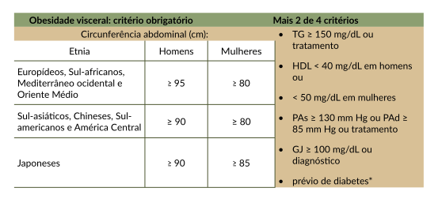

O diagnóstico da síndrome metabólica deve ser feito a partir de critérios clínicos e laboratoriais,
sendo
obrigatório o critério de aumento da circunferência abdominal, conforme a tabela a seguir.
Tabela 4. Critérios diagnósticos de síndrome metabólica em homens e mulheres, incluindo
pontos
de corte da circunferência abdominal como critério obrigatório.

Legenda: TG, triglicérides; HDL, colesterol HDL (high-density lipoprotein); PAs, pressão
arterial sistólica; PAd, pressão arterial diastólica; GJ, glicemia de jejum.
* O teste de tolerância à glicose é recomendado quando GJ > 99 mg/dL mas não é obrigatório
para o
diagnóstico de síndrome metabólica.
Fonte: Diretrizes Brasileiras de Obesidade (2016).